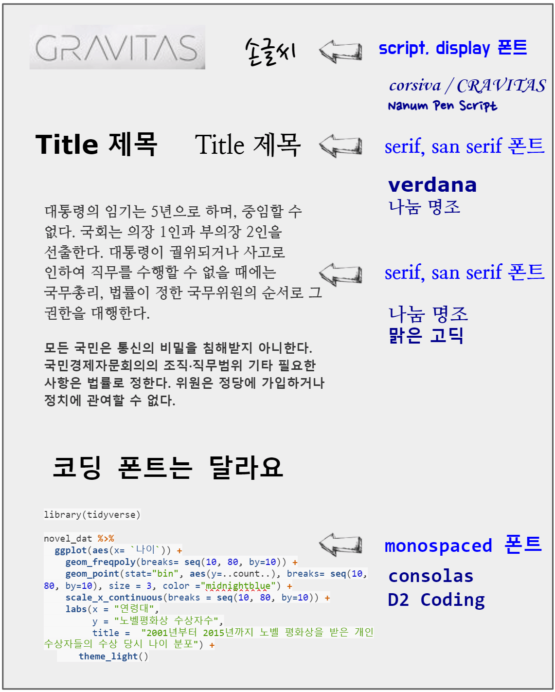
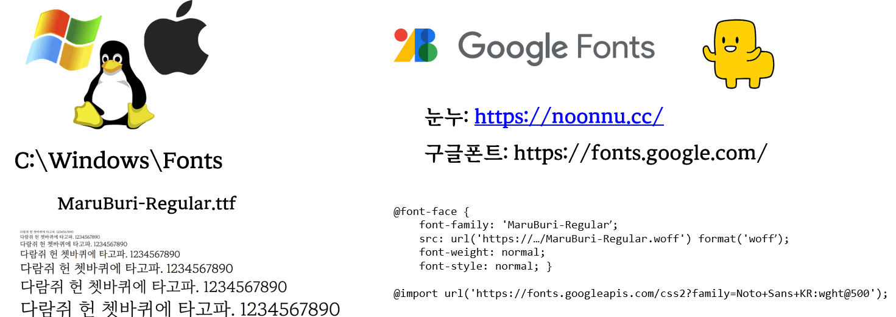
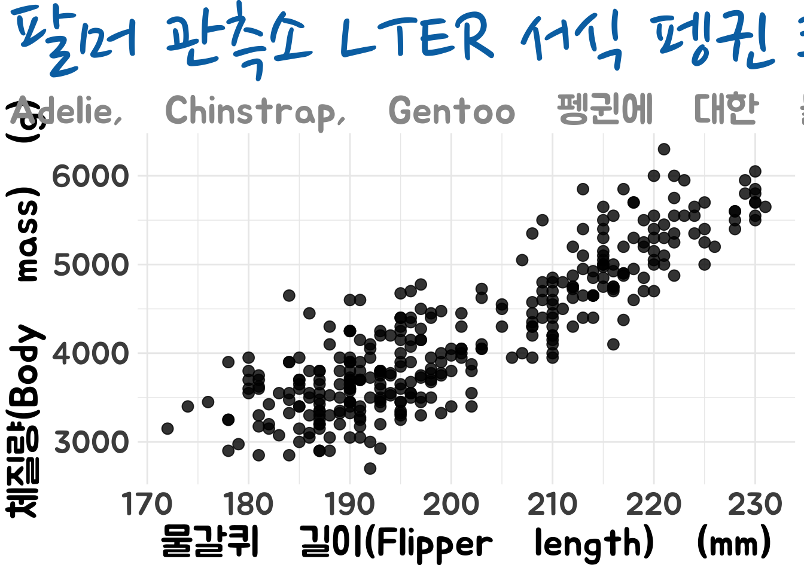

library(tidyverse)
mass_flipper <- ggplot(data = penguins,
aes(x = flipper_length_mm,
y = body_mass_g)) +
geom_point(size = 3,
alpha = 0.8) +
theme_minimal() +
labs(title = "팔머 관측소 LTER 서식 펭귄 크기",
subtitle = "Adelie, Chinstrap, Gentoo 펭귄에 대한 물갈퀴 길이와 체질량",
x = "물갈퀴 길이(Flipper length) (mm)",
y = "체질량(Body mass) (g)") +
theme_minimal()
R 마크다운 문서 작성에 필요한 글꼴 관련 정보
1 글꼴 분류 1
- 활자(Type)는 본래는 글자를 만드는 데 사용된 나무 또는 금속 조각을 일컫는 말이었습니다.
- 타이포그래피(Typography): 인쇄된 텍스트의 스타일과 모양을 가리키는 디자인 용어입니다.
- 서체(또는 글꼴 모음, Typeface): 글자 및 기호가 서로 비슷한 특징을 가지도록 디자인된 문자로 타임즈(Times), 에어리얼(Arial) 및 미니언(Minion)을 들 수 있습니다.
- 글꼴(Font): 서체의 특정 스타일을 지칭하는데, 예를 들어, 에어리얼 블랙(Arial Black)은 에어리얼 서체 중 한 글꼴이며, 미니언 프로 이탤릭체(Minion Pro Italic)는 미니언 글꼴 모음에 포함되어 있는 글꼴이다.
글꼴(Font)는 다양하지만 크게 다음 5가지로 영문의 경우 분류된다. 글꼴은 기본적으로 세리프(serif)와 산세리프(sans serif)의 2가지 스타일로 구분되는데 세리프는 글자의 획 끝에 작은 삐침이 있는 글꼴이며 산스(sans)은 라틴어로 없다는 뜻이기 때문에 삐침이 없는 글꼴을 지칭합니다.
- serif
- sans serif
- script
- monospaced
- display
가장 쉽게 분류되는 monospaced 글꼴은 코드를 작성하기 위해 등간격을 갖는 글꼴로 consolas, D2 Coding이 대표적이다. 산세리프(Sans serif)와 세리프(Serif) 글꼴은 본문에 사용하기 적합하지만, 좀더 시선을 끄는 디자인을 위해서는 조금 더 매력적인 디스플레이(Display) 혹은 스크립트(Script)을 선택하고, 제목(Title)에는 산세리프 글꼴을 사용하는 것이 일반적이다.

1.1 typeface vs font
typeface는 서체로 번역되고 font는 글꼴로 번역된다. 하나의 typeface에 다수 font가 포함될 수 있다. 팬그램(Pangram)은 ’모든 글자’라는 뜻으로 주어진 모든 문자를 적어도 한 번 이상 사용하여 만든 문장을 뜻한다. 팬그램은 로렘 입숨처럼 글꼴 샘플을 보여주거나 장비를 테스트하는 데 사용된다. 영어 팬그램으로 가장 유명한 ‘The quick brown fox jumps over the lazy dog’는 19세기부터 사용되어 왔다. 유사하게 한글에서는 “다람쥐 헌 쳇바퀴에 타고파”가 사용되고 있다.
1.2 파일폰트와 웹폰트
데이터 사이언스 출판을 위해 필요한 글꼴을 반영하는 방식은 크게 두가지로 나뉜다. 하나는 전통적인 방식으로 운영체제에 내장된 글꼴을 문서제작에 글꼴을 반영하는 방식이고, 다른 하나는 웹폰트를 사용하는 방식이다. 웹폰트를 사용하게 될 경우 장점은 출판문서가 동작되는 컴퓨터에 해당 글꼴이 없어도 인터넷을 통해 다운로드하여 글꼴이 반영되기 때문에 글꼴이 없어 생기는 다양한 문제를 해결하는 장점이 있다. 웹폰트로 구글폰트와 눈누가 유명하다. 저작권을 살펴보고 문서제작에 필요한 글꼴을 사용하면 된다.

2 출판 문서
데이터 사이언스 한글 출판 문서 제작을 위해서 다음 글꼴을 선택한다. 제목으로 산스 세리프 폰트로 구글 폰트에서 “노토 산스 세리프”를 선정하고, 본문은 눈누 웹사이트에서 “마루부리”를 선정하고 코딩 글꼴 폰트로 눈누에서 D2Coding 폰트를 지정한다.
- 산스 세리프(제목): Noto Sans Serif
- 세리프(본문): 마루부리
- 등간격(코딩): D2Coding
3 css 파일
출판문서 제작에 사용된 글꼴 관련 사항을 css/quarto-fonts.css 파일에 지정해둔다.
/* 글꼴 */
@import url('https://fonts.googleapis.com/css2?family=Noto+Sans+KR');
@import url('https://fonts.googleapis.com/css2?family=Noto+Serif+KR');
@import url('https://fonts.googleapis.com/css2?family=Nanum+Myeongjo&display=swap');
@font-face {
font-family: 'MaruBuri-Regular';
src: url('https://cdn.jsdelivr.net/gh/projectnoonnu/noonfonts_20-10-21@1.0/MaruBuri-Regular.woff') format('woff');
font-weight: normal;
font-style: normal;
}
@font-face {
font-family: 'D2Coding';
src: url('https://cdn.jsdelivr.net/gh/projectnoonnu/noonfonts_three@1.0/D2Coding.woff') format('woff');
font-weight: normal;
font-style: normal;
}
/* HTML */
h1, h2, h3, h4, h5, h6 {
font-family: "Noto Sans KR", sans-serif;
}
body {
font-family: "Nanum Myeongjo", "MaruBuri-Regular", "Noto Serif KR", serif;
font-size: 15px;
}
tt, code, pre {
font-family: "D2Coding", Consolas, monospace;
font-size: 15px;
}4 그래프
그래프(ggplot)에 사용되는 글꼴도 마찬가지로 showtext 패키지 웹폰트를 사용해서 다양한 한글도 사용할 수 있다. showtext 패키지는 font_add_google() 함수를 통해서 구글 한글폰트를 지정하여 이를 ggplot 에 적용시킬 수 있다.
library(tidyverse)
library(showtext)
library(palmerpenguins)
font_add_google("Nanum Pen Script", "nanum_pen_script")
font_add_google("Jua", "Jua")
showtext_auto()
theme_quarto <- theme(
text = element_text(family = 'Jua', size = 25),
plot.title.position = 'plot',
plot.title = element_text(
family = 'nanum_pen_script', size = 55,
face = 'bold',
colour = thematic::okabe_ito(8)[3],
margin = margin(t = 2, r = 0, b = 3, l = 0, unit = "mm")
),
plot.subtitle = element_text(
family = 'Jua', size = 25,
face = 'bold',
colour = thematic::okabe_ito(8)[5],
margin = margin(t = 0, r = 0, b = 0, l = 0, unit = "mm")
)
)
theme_set(theme_minimal() + theme_quarto)
mass_flipper <- ggplot(data = penguins,
aes(x = flipper_length_mm,
y = body_mass_g)) +
geom_point(size = 3,
alpha = 0.8) +
labs(title = "팔머 관측소 LTER 서식 펭귄 크기",
subtitle = "Adelie, Chinstrap, Gentoo 펭귄에 대한 물갈퀴 길이와 체질량",
x = "물갈퀴 길이(Flipper length) (mm)",
y = "체질량(Body mass) (g)")
mass_flipper
5 표
구글 폰트에서 다양한 글꼴을 표 제목, 표 칼럼명, 표 셀값에 다르게 적용하며 크기는 물론 색상과 굵기도 적용이 가능하다.
library(gt)
basic_theme <- function(data, ...){
data %>%
tab_options(
column_labels.background.color = "blue",
table.font.size = px(12),
column_labels.font.size = px(20),
row.striping.background_color = "#9678b6",
heading.align = "left",
heading.title.font.size = px(30)
)
}
palmerpenguins::penguins %>%
select( 펭귄종=species, 섬=island, bill_length_mm, body_mass_g) %>%
slice_sample(n = 20) %>%
gt() %>%
tab_header(title = md("팔머 펭귄 표본 **20 마리** 측정 정보")) %>%
tab_source_note(source_note = "데이터: Kristen Gorman 박사와 남국 팔머 관측소(Palmer Station, Antarctica LTER)에서 수집") %>%
cols_label(bill_length_mm = "부리 길이 (mm)",
body_mass_g = "체질량 (g)") %>%
tab_style(
style = cell_text(
font = c(
google_font(name = "Nanum Pen Script"),
default_fonts()
),
size = "xx-large",
color = "gray35",
weight = "bolder"
),
locations = cells_body(columns = bill_length_mm)
) %>%
# 체질량 칼럼 ---------------
tab_style(
style = cell_text(
font = c(
google_font(name = "Black Han Sans"),
default_fonts()
),
size = "large",
color = "blue",
weight = "bolder"
),
locations = cells_body(columns = body_mass_g)
) %>%
# 표 Header 와 첫번째 칼럼 ---------------
tab_style(
style = cell_text(
font = google_font("Do Hyeon"),
size = "large"
),
locations = list(
cells_column_labels(everything()),
cells_body(columns = 1)
)
) %>%
# 표 제목 ---------------
tab_style(
style = cell_text(
font = google_font("Dokdo"),
align = "left",
size = "xx-large"
),
locations = cells_title("title")
) %>%
basic_theme() | 팔머 펭귄 표본 20 마리 측정 정보 | |||
|---|---|---|---|
| 펭귄종 | 섬 | 부리 길이 (mm) | 체질량 (g) |
| Gentoo | Biscoe | 49.3 | 5850 |
| Chinstrap | Dream | 48.1 | 3325 |
| Gentoo | Biscoe | 45.2 | 5200 |
| Adelie | Biscoe | 39.7 | 3550 |
| Gentoo | Biscoe | 46.8 | 5500 |
| Gentoo | Biscoe | 46.5 | 4400 |
| Gentoo | Biscoe | 50.5 | 5000 |
| Gentoo | Biscoe | 42.6 | 4950 |
| Adelie | Dream | 36.9 | 3500 |
| Adelie | Biscoe | 35.9 | 3800 |
| Gentoo | Biscoe | 50.8 | 5200 |
| Chinstrap | Dream | 50.6 | 3800 |
| Adelie | Torgersen | NA | NA |
| Adelie | Torgersen | 44.1 | 4000 |
| Adelie | Biscoe | 35.0 | 3450 |
| Gentoo | Biscoe | 45.8 | 4700 |
| Chinstrap | Dream | 50.5 | 4050 |
| Adelie | Torgersen | 41.5 | 4300 |
| Gentoo | Biscoe | 48.8 | 6000 |
| Adelie | Torgersen | 41.8 | 4450 |
| 데이터: Kristen Gorman 박사와 남국 팔머 관측소(Palmer Station, Antarctica LTER)에서 수집 | |||